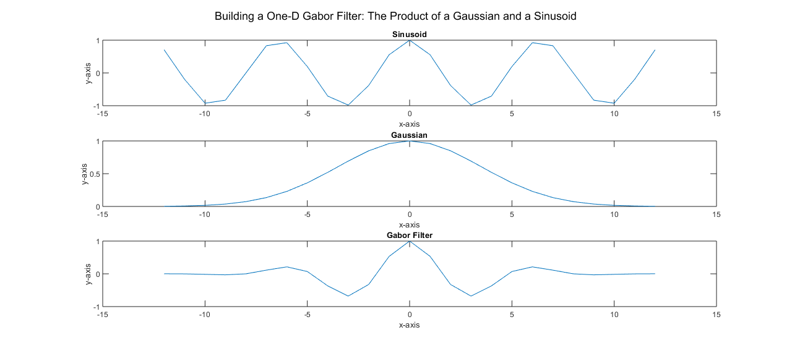
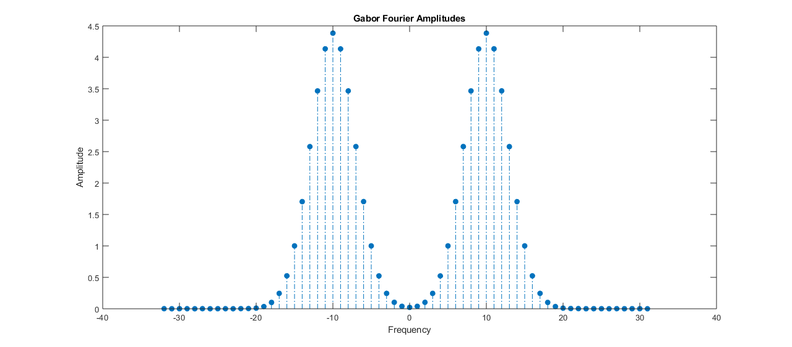
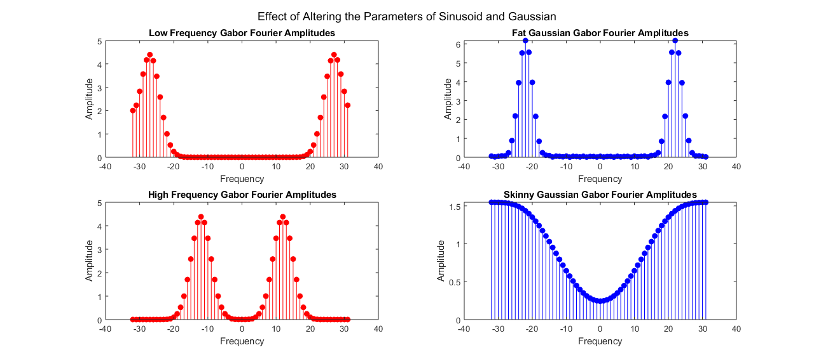
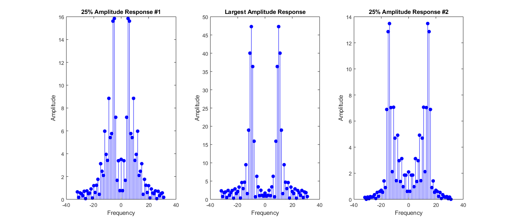

HW # 3 - Question 3 - Math Tools - Matthew DeVerna
Contents
Question 3: Gabor Filter.
(A) Create and Describe a One-Dimensional Gabor Filter
n = 25 ;
x = linspace(-12,12,25) ;
sigma = 3.5 ;
omega = 2*pi*(10/64) ;
gauss = exp(-((x.^2)/(2*sigma^2))) ;
sinusoid = cos(omega * x) ;
gaborFilter = gauss.* sinusoid ;
figure ;
subplot(3,1,1)
plot(x, sinusoid)
title('Sinusoid')
xlabel('x-axis')
ylabel('y-axis')
subplot(3,1,2)
plot(x, gauss)
title('Gaussian')
xlabel('x-axis')
ylabel('y-axis')
subplot(3,1,3)
plot(x, gaborFilter)
title('Gabor Filter')
xlabel('x-axis')
ylabel('y-axis')
sgtitle('Building a One-D Gabor Filter: The Product of a Gaussian and a Sinusoid')
GaborFilterVisualCheck = {'Looking Good!'}
GaborFilterVisualCheck =
1×1 cell array
{'Looking Good!'}

Plot the Fourier Transformation of this Filter
Filter_Type = {'This is a bandpass filter which is most responsive to sinusoids at a'
'frequency of ten cycles per sample. This can be seen in the max amplitude'
'of the fourier transformed gabor filter. This comes from the sinusoid'
'which has a k value that equals 10 (from 10/64 when creating omega).'}
N = 64 ;
gaborFourier = abs(fft(gaborFilter,N)) ;
centered_gaborFourier = fftshift(gaborFourier) ;
fourier_x = -N/2 : N/2-1 ;
figure ;
stem(fourier_x, centered_gaborFourier, 'filled', '-.') ;
title('Gabor Fourier Amplitudes') ;
xlabel('Frequency') ;
ylabel('Amplitude') ;
Filter_Type =
4×1 cell array
{'This is a bandpass filter which is most responsive to sinusoids at a' }
{'frequency of ten cycles per sample. This can be seen in the max amplitude'}
{'of the fourier transformed gabor filter. This comes from the sinusoid' }
{'which has a k value that equals 10 (from 10/64 when creating omega).' }

Why does it have this shape? How is the shape related to the chosen parameters?
GaborShape = {'The gabor filter is the product of the sinusoid and the gaussian'
'distribution. Having said that, the amplitudes found in the Fourier'
'transformed Gabor plot are defined by the omega and sigma parameters'
'above.'
'Omega/Frequency:'
'If you change the frequency of omega by changing: '
'10 --to--> 15 (increasing) or 10 --to--> 5 (decreasing) you will be'
'moving the "passing" frequencies closer together or further apart,'
'respectively.'
'Sigma/Gaussian Width:'
'If you change the width of the gaussian by changing:'
'3.5 --to--> 1 (reducing) or 3.5 --to--> 5 (increasing) you will be'
'allowing more or less frequencies to "pass through", respectively.'
'Specifically, reducing the gaussian width, will increase the range of'
'frequencies allowed through; both below and above zero, moving away from'
'the center of each passing frequency distribution. I.e. the width of '
'"passing" distributions is increased or decreased, respectively.'
'Additionally, a skinner gaussian will produce lower amplitudes while a'
'fat one will produce higher amplitudues.'
' '
'See the below plots for a visualization of these effects.'}
GaborShape =
21×1 cell array
{'The gabor filter is the product of the sinusoid and the gaussian' }
{'distribution. Having said that, the amplitudes found in the Fourier' }
{'transformed Gabor plot are defined by the omega and sigma parameters' }
{'above.' }
{'Omega/Frequency:' }
{'If you change the frequency of omega by changing: ' }
{'10 --to--> 15 (increasing) or 10 --to--> 5 (decreasing) you will be' }
{'moving the "passing" frequencies closer together or further apart,' }
{'respectively.' }
{'Sigma/Gaussian Width:' }
{'If you change the width of the gaussian by changing:' }
{'3.5 --to--> 1 (reducing) or 3.5 --to--> 5 (increasing) you will be' }
{'allowing more or less frequencies to "pass through", respectively.' }
{'Specifically, reducing the gaussian width, will increase the range of' }
{'frequencies allowed through; both below and above zero, moving away from'}
{'the center of each passing frequency distribution. I.e. the width of ' }
{'"passing" distributions is increased or decreased, respectively.' }
{'Additionally, a skinner gaussian will produce lower amplitudes while a' }
{'fat one will produce higher amplitudues.' }
{' ' }
{'See the below plots for a visualization of these effects.' }
Plotting With Different Parameters
skinny_gauss_sigma = 1 ;
fat_gauss_sigma = 5 ;
low_freq_omega = 2*pi*(5/64) ;
high_freq_omega = 2*pi*(20/64) ;
low_freq_gauss = exp(-((x.^2)/(2*sigma^2))) ;
low_freq_sinusoid = cos(low_freq_omega * x) ;
low_freq_gaborFilter = low_freq_gauss.* low_freq_sinusoid ;
low_freq_gaborFourier = abs(fft(low_freq_gaborFilter,64)) ;
high_freq_gauss = exp(-((x.^2)/(2*sigma^2))) ;
high_freq_sinusoid = cos(high_freq_omega * x) ;
high_freq_gaborFilter = high_freq_gauss.* high_freq_sinusoid ;
high_freq_gaborFourier = abs(fft(high_freq_gaborFilter,64)) ;
fat_gauss = exp(-((x.^2)/(2*fat_gauss_sigma^2))) ;
fat_gauss_sinusoid = cos(omega * x) ;
fat_gauss_gaborFilter = fat_gauss.* fat_gauss_sinusoid ;
fat_gauss_gaborFourier = abs(fft(fat_gauss_gaborFilter,64)) ;
skinny_gauss = exp(-((x.^2)/(2*skinny_gauss_sigma^2))) ;
skinny_gauss_sinusoid = cos(omega * x) ;
skinny_gauss_gaborFilter = skinny_gauss.* skinny_gauss_sinusoid ;
skinny_gauss_gaborFourier = abs(fft(skinny_gauss_gaborFilter,64)) ;
figure ;
subplot(2,2,1)
stem(fourier_x, low_freq_gaborFourier, 'r', 'filled') ;
title('Low Frequency Gabor Fourier Amplitudes') ;
xlabel('Frequency') ;
ylabel('Amplitude') ;
subplot(2,2,3)
stem(fourier_x, high_freq_gaborFourier, 'r', 'filled') ;
title('High Frequency Gabor Fourier Amplitudes') ;
xlabel('Frequency') ;
ylabel('Amplitude') ;
subplot(2,2,2)
stem(fourier_x, fat_gauss_gaborFourier, 'b', 'filled') ;
title('Fat Gaussian Gabor Fourier Amplitudes') ;
xlabel('Frequency') ;
ylabel('Amplitude') ;
subplot(2,2,4)
stem(fourier_x, skinny_gauss_gaborFourier, 'b', 'filled') ;
title('Skinny Gaussian Gabor Fourier Amplitudes') ;
xlabel('Frequency') ;
ylabel('Amplitude') ;
sgtitle('Effect of Altering the Parameters of Sinusoid and Gaussian') ;

(B/C) Find the Frequency that Produces the Largest Amplitudes
maxAmplitude = max(centered_gaborFourier) ;
high_resp_freq = fourier_x(centered_gaborFourier == maxAmplitude) ;
high_resp_freq(1) = [] ;
quarter_percent = maxAmplitude*.25
maxAmplitudePeriod = 1/(high_resp_freq/64)
lowFreq = 5 ;
highFreq = 15 ;
lowFreq_omega = 2*pi*(lowFreq/64) ;
midFreq_omega = 2*pi*(high_resp_freq/64) ;
highFreq_omega = 2*pi*(highFreq/64) ;
lowFreq_sinusoid = cos(lowFreq_omega * x) ;
midFreq_sinusoid = cos(midFreq_omega * x) ;
highFreq_sinusoid = cos(highFreq_omega * x) ;
low_fourier_amps = abs(fft(conv(gaborFilter, lowFreq_sinusoid , 'same'), 64)) ;
mid_fourier_amps = abs(fft(conv(gaborFilter, midFreq_sinusoid , 'same'), 64)) ;
high_fourier_amps = abs(fft(conv(gaborFilter, highFreq_sinusoid , 'same'), 64)) ;
centered_low = fftshift(low_fourier_amps) ;
centered_mid = fftshift(mid_fourier_amps) ;
centered_high = fftshift(high_fourier_amps) ;
figure
subplot(1,3,1)
stem(fourier_x, centered_low, 'b', 'filled') ;
title('25% Amplitude Response #1') ;
xlabel('Frequency') ;
ylabel('Amplitude') ;
subplot(1,3,2)
stem(fourier_x, centered_mid, 'b', 'filled') ;
title('Largest Amplitude Response') ;
xlabel('Frequency') ;
ylabel('Amplitude') ;
subplot(1,3,3)
stem(fourier_x, centered_high, 'b', 'filled') ;
title('25% Amplitude Response #2') ;
xlabel('Frequency') ;
ylabel('Amplitude') ;
low_max_amp = max(centered_low) ;
mid_max_amp = max(centered_mid) ;
high_max_amp = max(centered_high) ;
lowFreqRatio = low_max_amp/mid_max_amp
lowFreqRatio = high_max_amp/mid_max_amp
lowMidHigh_Answer = {'We can see that these are approximately close, but not perfect, because'
'we are utilizing a discrete function, not a continuous one.'}
quarter_percent =
1.0961
maxAmplitudePeriod =
6.4000
lowFreqRatio =
0.3350
lowFreqRatio =
0.2850
lowMidHigh_Answer =
2×1 cell array
{'We can see that these are approximately close, but not perfect, because'}
{'we are utilizing a discrete function, not a continuous one.' }
